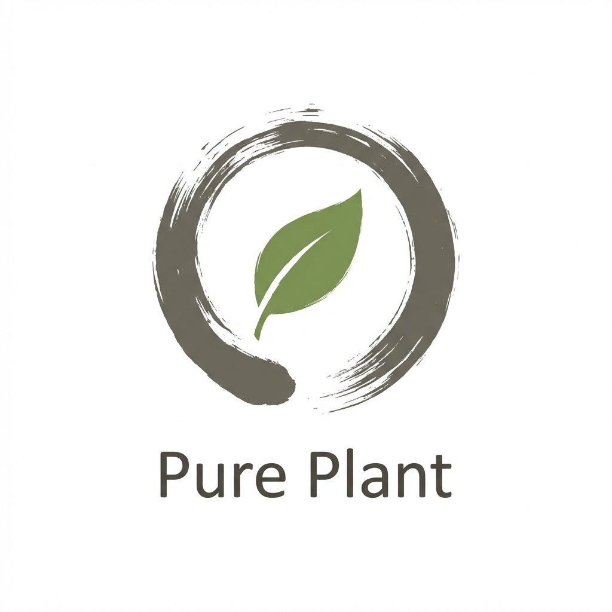
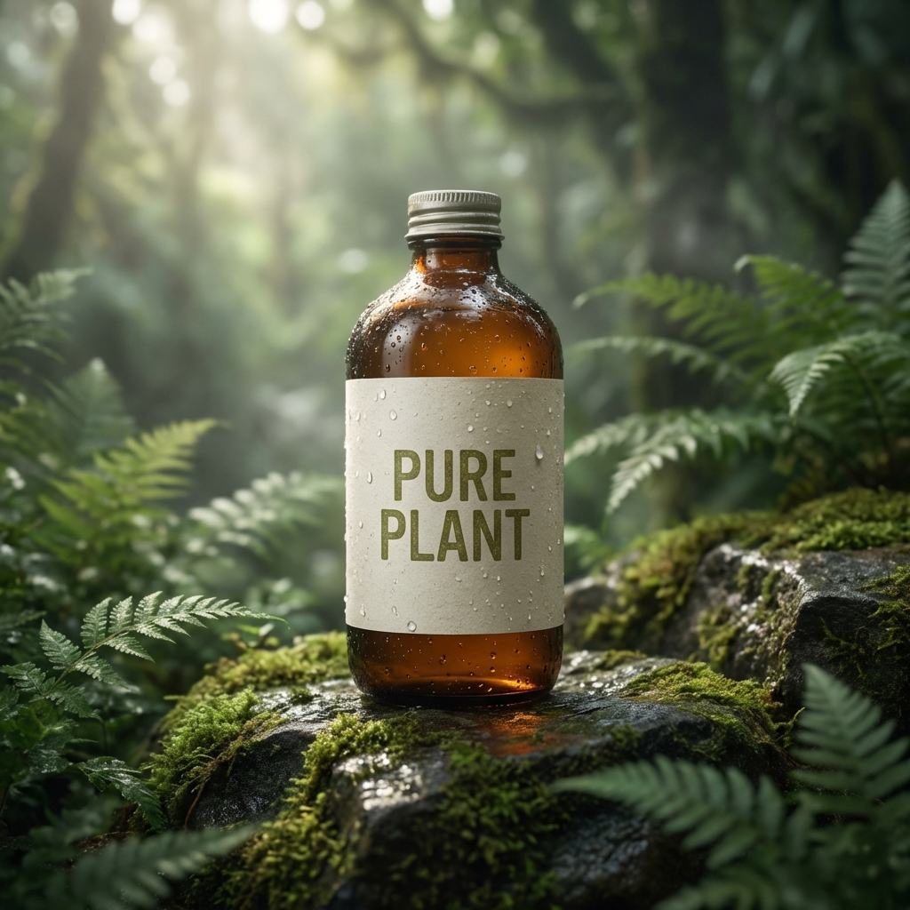
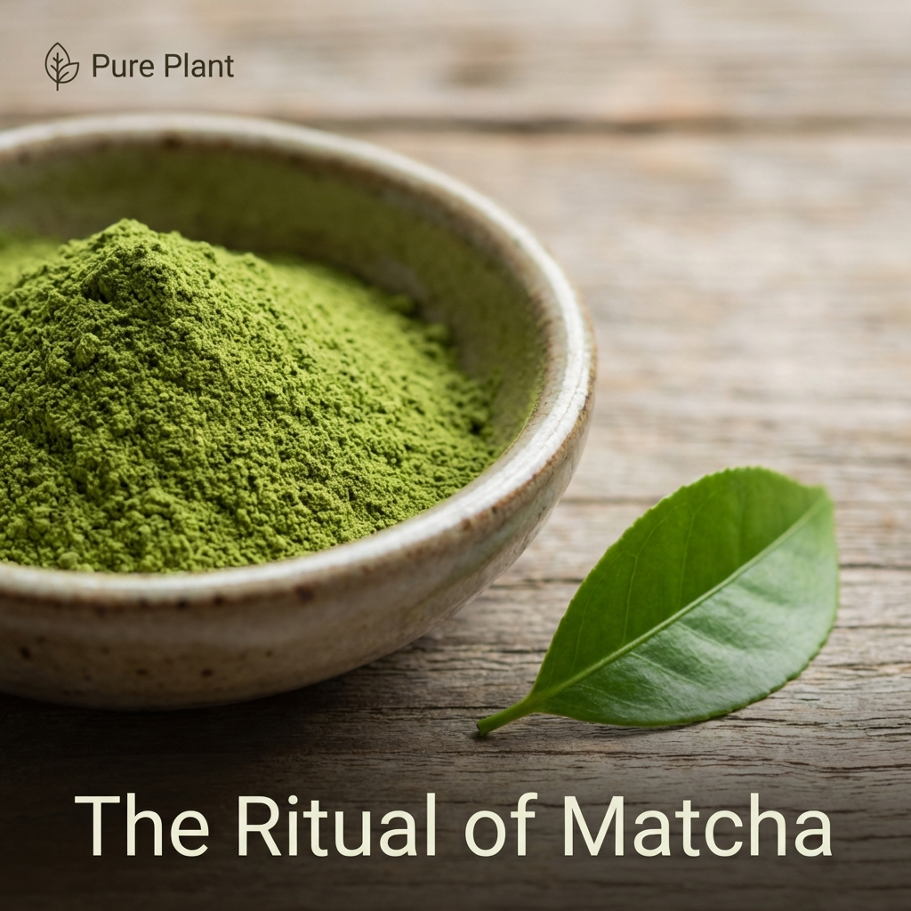
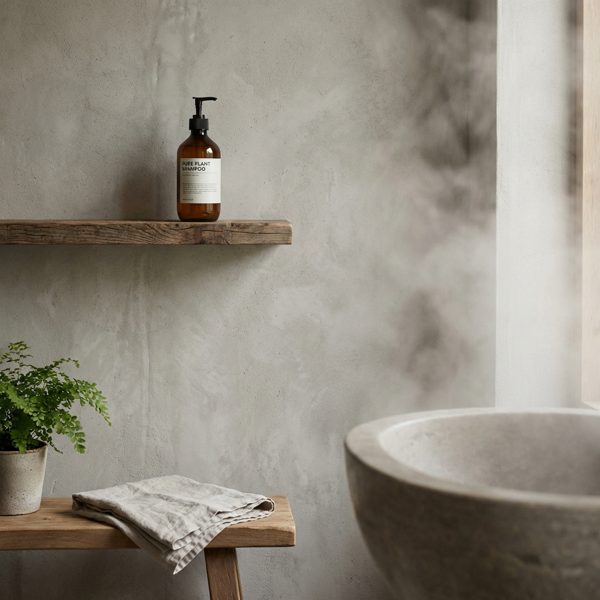
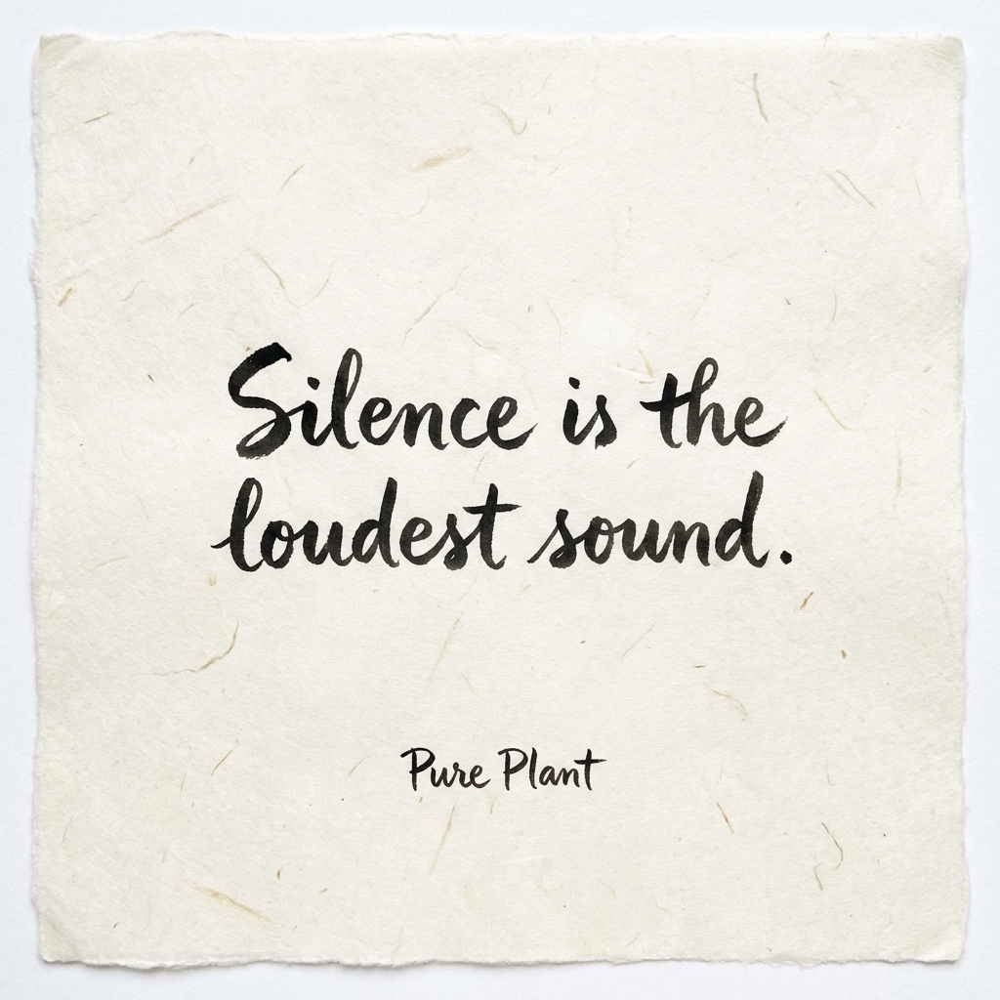

Balance. Harmony. Nature.
"In a world of noise,
we choose silence."
Pure Plant is not just ingredients.
It is the ritual of returning to oneself.
Inspired by the tea ceremony.

Amber glass. Paper. Earth.
Digital Presence



Ritual. Atmosphere. Wisdom.